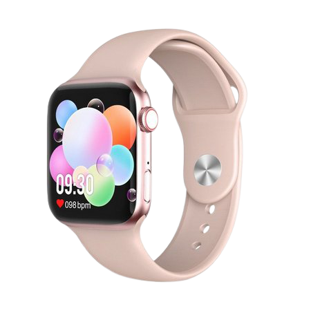
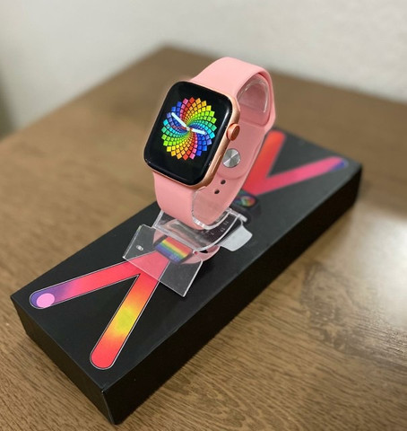
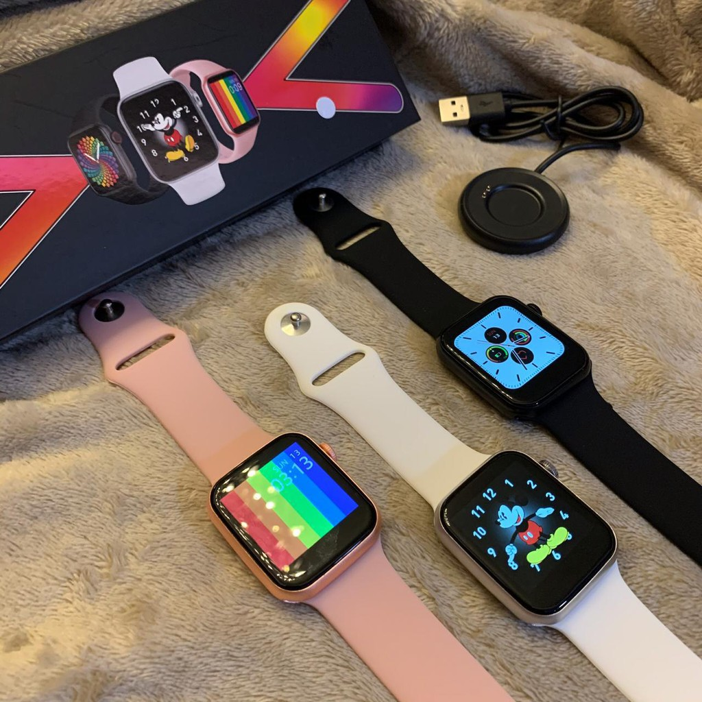
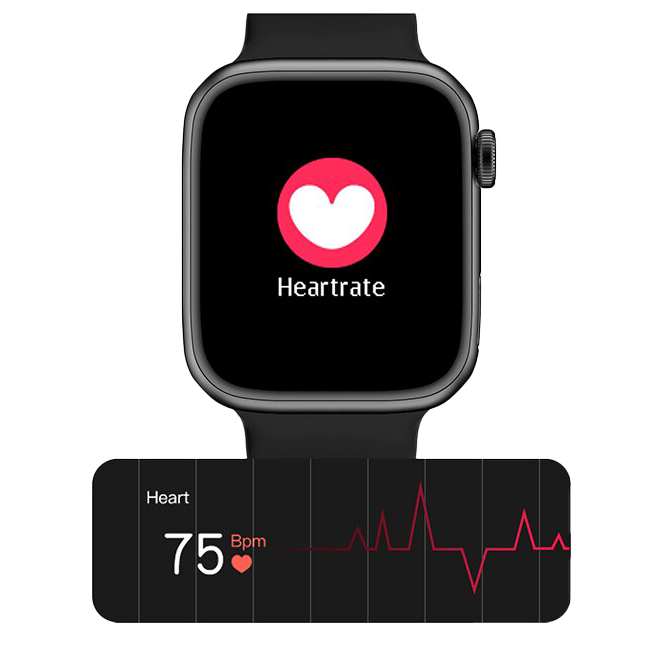
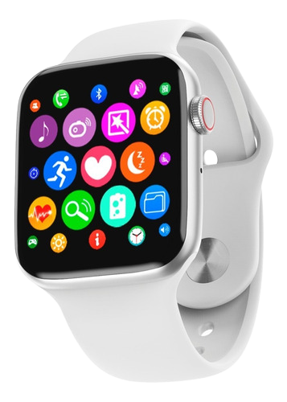

Ecrã IPS 1,75″ – Resolução 385 x 320 p – Aviso de chamadas, mensagens e notificações – Sensor de Frequência Cardíaca 24/7 – Electrocardiogramas – Termómetro – Controlo do sono – 10 modos de desporto
Ecrã de 1.75″ com alta resolução e vidro 2.5D
Efeito 2.5D no seu ecrã oferece uma aparência premium, com sensação que nunca acaba graças às margens arredondadas.

Faça e atenda chamadas
Não vai precisar ter o seu smartphone à mão para ler as suas notificações e mensagens, consultar os dados do seu treinamento, fazer uma contagem regressiva… Mas não é só isso. O G500 possui um microfone e altifalante integrados, sendo capaz de atender as chamadas recebidas no seu smartphone pelo próprio relógio e até mesmo fazer você mesmo marcando o número. Tudo muito prático!

Design atrativo com caixa retangular
Não importa se deseja que o seu novo relógio presuma da aparência perfeita ou se o quer para treinar. O G500 permitirá que faça as duas coisas. Tem um design bastante semelhante ao do Apple Watch, com um corpo retangular feito de uma liga de metal e policarbonato, leve e resistente ao mesmo tempo.
Neste caso, foi incluído um botão físico no lado, com o qual poderá bloquear e desbloquear confortavelmente o seu ecrã.

Pulseira de silicone intercambiável
Por outro lado, a sua pulseira de silicone hipoalergénica torna o relógio perfeito para usar todos os dias, tanto pelo conforto como pela aparência. No entanto, poderá substituir a sua pulseira de 42 mm para adaptá-la a diferentes situações. No nosso catálogo, poderá encontrar uma grande variedade de pulseiras, assim como nos artigos relacionados deste produto.

Controle o seu coração com o Monitor de Frequência Cardíaca
Mas o que é realmente importante vai por dentro. O G500 fornece uma medição contínua e dinâmica da frequência cardíaca, esteja a descansar ou a praticar desporto. Também controla e avalia a saúde do coração usando a tecnologia ECG, podendo realizar eletrocardiogramas. Pode também efetuar medição de temperatura do corpo. Desta forma, obteremos uma referência precisa do nosso estado de saúde para otimizar o nosso treinamento, embora nunca devamos tomá-lo como um diagnóstico médico.

Passos, distância e calorias com modos de desporto
Além da sua saúde, poderá controlar todas as suas atividades diárias. O relógio G500 conta os seus passos, a distância percorrida e as calorias queimadas, adaptando essas medidas ao desporto que estiver a praticar a cada momento, graças aos modos de desporto: caminhar, correr, ciclismo, ténis de mesa, badminton, basquetebol, saltar à corda, futebol e ioga.
ESSAS SÃO APENAS ALGUMAS DAS FUNÇÕES DO PODEROSO G500